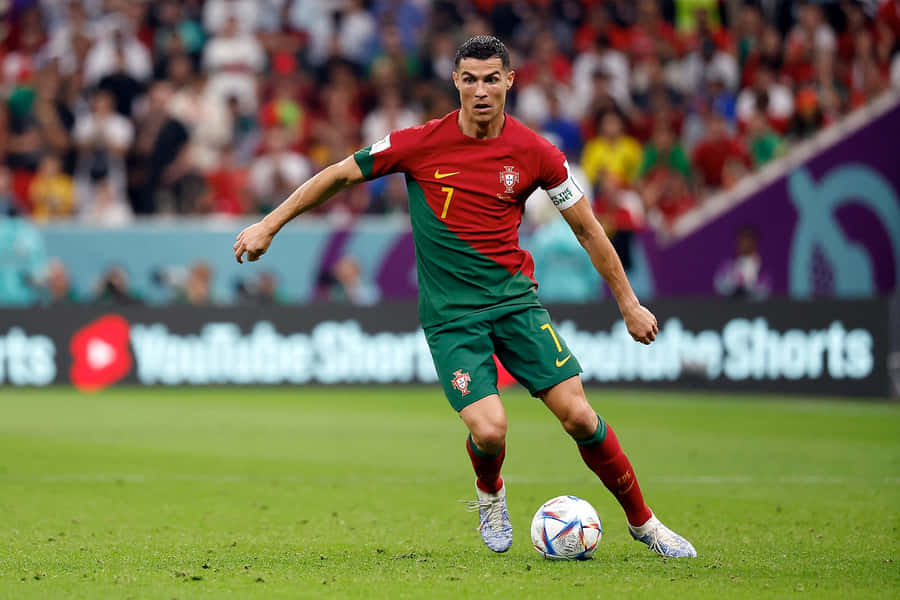

The G.O.A.T CR7
Cristiano Ronaldo
Ronaldo dos Santos Aveiro. Born on 5 February 1985 in Funchal, Madeira, Portugal is a Portuguese professional footballer who plays as a forward for and captains both Saudi Pro League club Al Nassr and the Portugal national team
Quick Facts
Some of His Achivements
- Ronaldo has won five Ballon d'Or awards
- He has three UEFA Men's Player of the Year Awards
- Four European Golden Shoes, the most by a European player
- Ronaldo holds the records for most appearances (183), goals (140) and assists (42) in the Champions League, goals in the European Championship (14), international goals (130) and international appearances (206)
- He has scored over 890 official senior career goals for club and country
He has won 33 trophies in his career
- Seven league titles
- Five UEFA Champions Leagues
- The UEFA European Championship
- The UEFA Nations League
Ronaldo began his senior career with Sporting CP, before signing with Manchester United in 2003.At age 23, he won his first Ballon d'Or.Ronaldo was the subject of the then-most expensive association football transfer when he signed for Real Madrid in 2009 in a transfer worth € 94 million (£ 80 million).Ronaldo made his international debut for Portugal in 2003 at the age of 18.
Gallery
